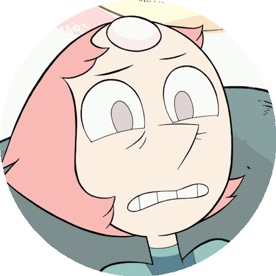

Terceira Situação
Nesse momento Steven entra no quarto da Pérola, vê a cena e corre para ajudá-la. Empurra a imagem macabra de sua falecida mãe e tenta convencer Pérola de que suas vontades não alteram o passado, e que ela sabe que fez tudo que estava em seu alcance para defende-la. Quando Steven oferece ajuda, o que a nossa personagem faz?
